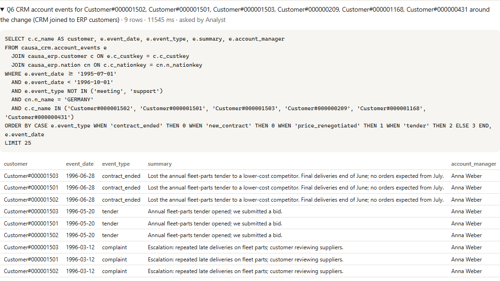

Ask why a number moved. Get an answer you can check.
Four agents investigate a revenue change across an ERP and a CRM federated in Zetaris. A critic recomputes every figure before the answer is released, and every claim cites the SQL behind it. The reasoning runs on NVIDIA Nemotron through Meterless Nightshift, and Meterless H-MEM remembers what explained earlier changes.
Narrated two-minute demo of a real run (sound on) · 3-minute pitch · captioned walkthrough · waiting is sped up and labelled
A question in, a cited answer out
Why did revenue in Germany drop in Q3 1996?
Revenue fell 15.1% ($3.73M) Q1, almost all lost volume in the Automobile segment Q4. Three accounts went to zero Q3. The CRM shows they lost their annual fleet-parts tender to a cheaper competitor on 28 June, after escalating late deliveries in March Q6. Confidence 95%.

Four agents, and the critic has a veto
Plan
Recalls past findings from H-MEM, sets the periods and focus, and ranks hypotheses. Whatever explained earlier changes goes first.
Test
SQL in Zetaris: totals, a price/volume split, a company baseline, breakdowns scored against the trend, a drill-down, CRM events.
Challenge
Recomputes every figure from its query. 8 checks plus a Nemotron challenge. Sends the Analyst back with new queries, or approves.
Answer
A cited answer with confidence and reasons. Stores what explained the change in H-MEM for next time.

The sponsor technology does the work
Zetaris
ERP and CRM are registered as causa_erp and causa_crm by one SQL script. Every query goes through Zetaris' REST API, and the CRM step joins both sources in one federated query.
H-MEM
Investigation memory: findings tagged with the dimensions that explained them, recalled to reorder the next plan, adjusted by Helpful/Wrong feedback. Conformance 13/13.
Nightshift
The only model endpoint: /v1/chat/completions with the meterless-app and meterless-scope headers.
Nemotron
3.5 Lightning plans, drafts and critiques; 3 Ultra writes the report. Every trace event names the model that answered.
SELECT c.c_name, e.event_date, e.event_type, e.summary FROM causa_crm.account_events e -- CRM database JOIN causa_erp.customer c ON e.c_custkey = c.c_custkey -- ERP database JOIN causa_erp.nation n ON n.n_nationkey = c.c_nationkey WHERE n.n_name = 'GERMANY' AND c.c_name IN (...) -- the accounts behind the drop
Real runs
| Question | What Causa found | Confidence |
|---|---|---|
| Germany, Q3 1996 | Three Automobile accounts lost a fleet-parts tender to a cheaper competitor | 95% |
| France, Q1 1997 | A winter volume-discount programme cut revenue per unit by 9% | 85% |
| United States, 1997 | Two Machinery customers won in December 1996 added $15.6M | 95% |
| Japan, Q2 1996 (control) | A real drop, but no CRM event explains it, so the cause is reported as not established | JAPAN_CONF |
Each run's full result and JSONL trace (every step, query and model) is in output_examples.
Team
Paras Adlakha
Aerospace, electronics and systems engineering. Agents, data layer and integrations.